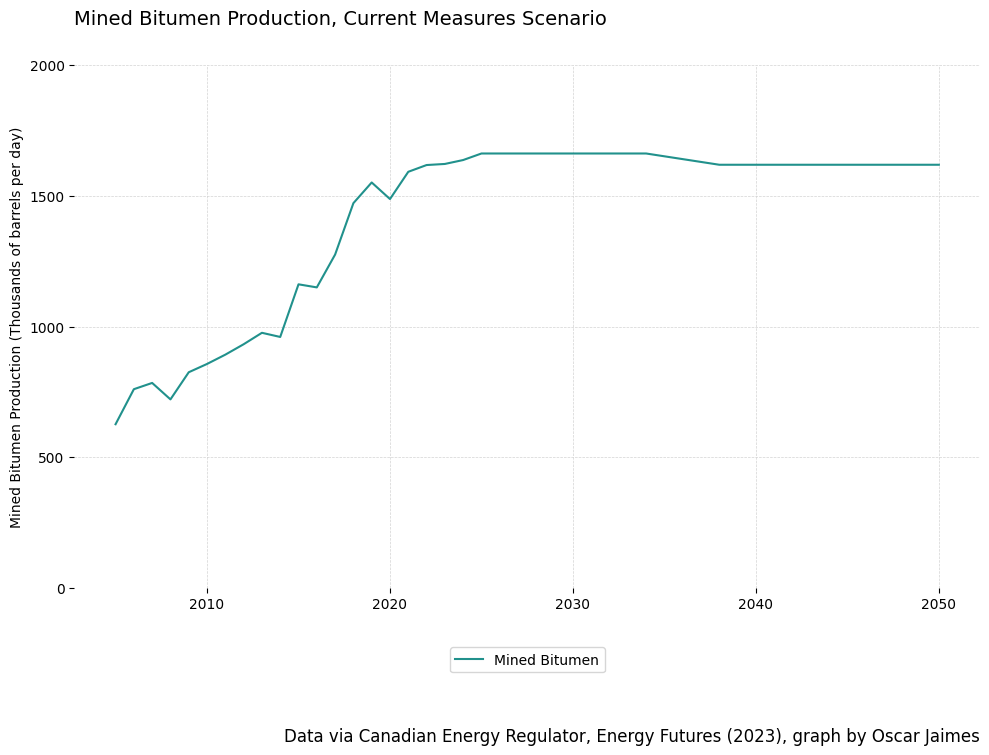
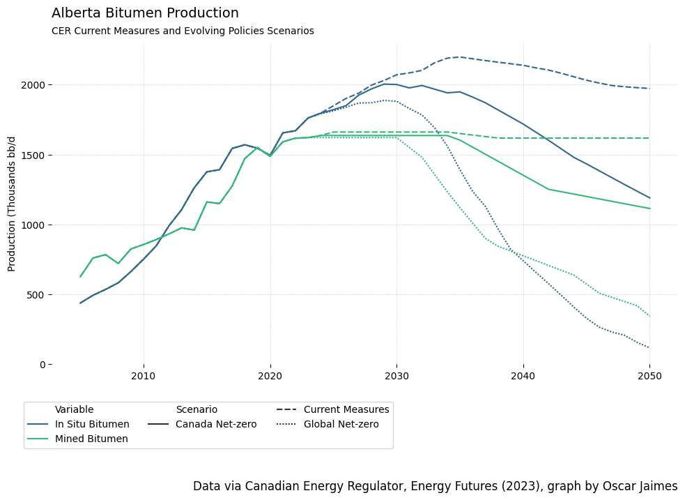
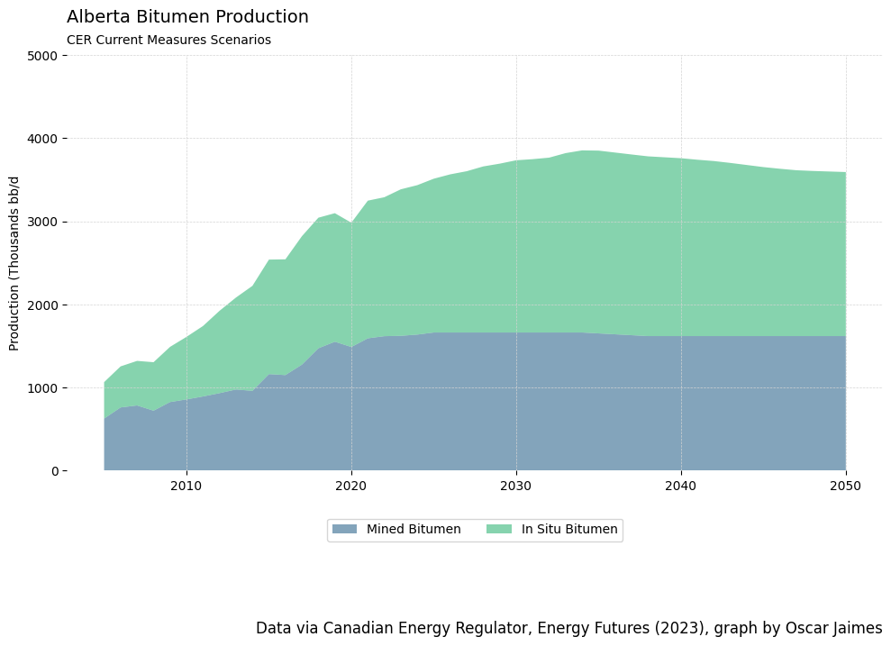
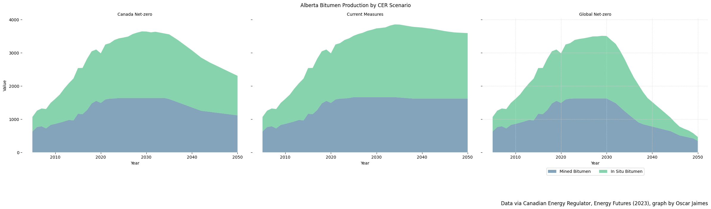
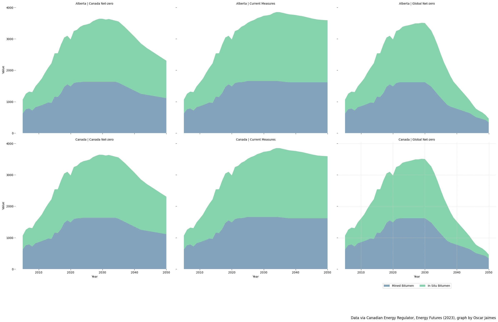
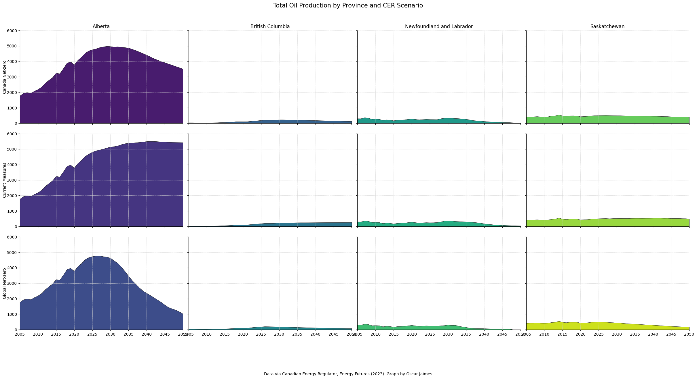

Bitumen Production - Data Exercise Week 4
Fetch Data & Setup Dataframe
Code
DATA_URL = 'https://www.cer-rec.gc.ca/open/energy/energyfutures2023/crude-oil-production-2023.csv'
cer_crude = None
# fetch data from GOC and load it into pandas dataframe
response = requests.get(DATA_URL)
with BytesIO(response.content) as data:
cer_crude = pd.read_csv(data)
# Filter out unwanted column
cer_crude.drop('Unnamed: 0', axis=1, inplace=True)
cer_crude.head(10)| Scenario | Unit | Region | Variable | Year | Value | |
|---|---|---|---|---|---|---|
| 0 | Canada Net-zero | Thousand Barrels per day | Alberta | (Upgraded Bitumen) | 2005 | 522.196657 |
| 1 | Canada Net-zero | Thousand Barrels per day | Alberta | (Upgraded Bitumen) | 2006 | 619.063422 |
| 2 | Canada Net-zero | Thousand Barrels per day | Alberta | (Upgraded Bitumen) | 2007 | 652.181177 |
| 3 | Canada Net-zero | Thousand Barrels per day | Alberta | (Upgraded Bitumen) | 2008 | 620.080057 |
| 4 | Canada Net-zero | Thousand Barrels per day | Alberta | (Upgraded Bitumen) | 2009 | 722.489601 |
| 5 | Canada Net-zero | Thousand Barrels per day | Alberta | (Upgraded Bitumen) | 2010 | 702.550381 |
| 6 | Canada Net-zero | Thousand Barrels per day | Alberta | (Upgraded Bitumen) | 2011 | 810.225803 |
| 7 | Canada Net-zero | Thousand Barrels per day | Alberta | (Upgraded Bitumen) | 2012 | 817.105135 |
| 8 | Canada Net-zero | Thousand Barrels per day | Alberta | (Upgraded Bitumen) | 2013 | 835.131864 |
| 9 | Canada Net-zero | Thousand Barrels per day | Alberta | (Upgraded Bitumen) | 2014 | 842.494692 |
Helper Functions
Code
def create_line_graph(data, x, y, hue, title, y_label, caption, yticks, subtitle='', grouping=False, group_name='', legend_n_cols=1) -> None:
'''
Creates and shows a line graph based on the above parameters.
This function will create a line graph based on any arbritrary data.
'''
# color and size
palette = sns.color_palette("viridis", n_colors=data[hue].nunique())
plt.figure(figsize=(10, 8))
# plot the line based on grouping
if grouping:
sns.lineplot(data=data, x=x, y=y, hue=hue, style=group_name, dashes=True, palette=palette)
else:
sns.lineplot(data=data, x=x, y=y, hue=hue, palette=palette)
# add title and subtitle
plt.gca().text(0, 1.07, title, transform=plt.gca().transAxes, fontsize=14, verticalalignment='bottom', ha='left')
if subtitle:
plt.gca().text(0, 1.05, subtitle, transform=plt.gca().transAxes, verticalalignment='top', ha='left')
# format axes
plt.ylabel(y_label)
plt.xlabel('')
plt.yticks(yticks)
# create and position legend
bbox_to_anchor = (0.5 if not grouping else 0.25, -0.10)
plt.legend(loc='upper center', bbox_to_anchor=bbox_to_anchor, ncol=legend_n_cols)
# caption/source text
plt.text(x=1, y=-0.3 if not grouping else -0.4, s=caption, transform=plt.gca().transAxes, ha='right', va='bottom', fontsize=12)
# display final graph
plt.grid(True, which='both', color='lightgray', linestyle='--', linewidth=0.5)
sns.despine(left=True, bottom=True)
plt.tight_layout()
plt.show()
def create_stacked_area_chart(data, x, y, hue, title, y_label, caption, yticks,
subtitle='', legend_n_cols=1, facet_by=None, facet_cols=1):
'''
Creates and shows a stacked area chart based on the above parameters.
If `facet_by` is provided, it will create faceted plots based on that column.
'''
# Define the plotting function
def stacked_plot(x, y, hue, **kwargs):
# The data for this particular facet is now available as kwargs['data']
facet_data = kwargs['data']
# Fetch unique hue categories and their respective colors
unique_hues = facet_data[hue].unique()
palette = sns.color_palette("viridis", n_colors=len(unique_hues))
# Prepare data for stacked area chart in reversed order
layers = [facet_data[facet_data[hue] == category][y].values for category in reversed(unique_hues)]
# Plot stacked area chart
x_values = facet_data[x].unique()
plt.stackplot(x_values, *layers, labels=reversed(unique_hues), colors=palette, alpha=0.6)
# Format axes
plt.ylabel(y_label)
plt.xlabel('')
plt.yticks(yticks)
# Create the FacetGrid if faceting is required
if facet_by:
# Check the number of facets
if len(facet_by) == 1:
g = sns.FacetGrid(data, col=facet_by[0], col_wrap=len(data[facet_by[0]].unique()), height=8)
elif len(facet_by) == 2:
g = sns.FacetGrid(data, col=facet_by[0], row=facet_by[1], height=8)
else:
raise ValueError("The function currently supports up to 2 faceting variables. You provided more.")
g.map_dataframe(stacked_plot, x, y, hue)
g.set_titles(col_template="{col_name}", row_template="{row_name}")
# Add title and subtitle
plt.subplots_adjust(top=0.9)
g.fig.suptitle(title)
# Create and position legend
bbox_to_anchor = (0.5, -0.10)
plt.grid(True, which='both', color='lightgray', linestyle='--', linewidth=0.5)
plt.legend(loc='upper center', bbox_to_anchor=bbox_to_anchor, ncol=legend_n_cols)
else:
plt.figure(figsize=(10, 8))
stacked_plot(x, y, hue, data=data)
# Add title and subtitle
plt.gca().text(0, 1.07, title, transform=plt.gca().transAxes, fontsize=14, verticalalignment='bottom', ha='left')
if subtitle:
plt.gca().text(0, 1.05, subtitle, transform=plt.gca().transAxes, verticalalignment='top', ha='left')
# Create and position legend
bbox_to_anchor = (0.5, -0.10)
plt.legend(loc='upper center', bbox_to_anchor=bbox_to_anchor, ncol=legend_n_cols)
# Caption/source text (only if not faceted)
plt.text(x=1, y=-0.4, s=caption, transform=plt.gca().transAxes, ha='right', va='bottom', fontsize=12)
# Display final graph
plt.grid(True, which='both', color='lightgray', linestyle='--', linewidth=0.5)
sns.despine(left=True, bottom=True)
plt.tight_layout()
plt.show()Introductory Graphs - Bitumen Production
Code
data = cer_crude[
(cer_crude['Region'] == 'Canada') &
(cer_crude['Unit'] == 'Thousand Barrels per day') &
(cer_crude['Variable'] == 'Mined Bitumen') &
(cer_crude['Scenario'] == 'Current Measures')
]
create_line_graph(
data=data,
x='Year',
y='Value',
hue='Variable',
title='Mined Bitumen Production, Current Measures Scenario',
y_label='Mined Bitumen Production (Thousands of barrels per day)',
caption='Data via Canadian Energy Regulator, Energy Futures (2023), graph by Oscar Jaimes',
yticks=[n for n in range(2001) if n % 500 == 0],
subtitle=None,
legend_n_cols=3,
grouping=False,
group_name=None
)
Code
data = cer_crude[
(cer_crude['Region'] == 'Alberta') &
(cer_crude['Unit'] == 'Thousand Barrels per day') &
(cer_crude['Variable'].isin(['In Situ Bitumen', 'Mined Bitumen']))
]
create_line_graph(
data=data,
x='Year',
y='Value',
hue='Variable',
title='Alberta Bitumen Production',
subtitle='CER Current Measures and Evolving Policies Scenarios',
y_label='Production (Thousands bb/d',
caption='Data via Canadian Energy Regulator, Energy Futures (2023), graph by Oscar Jaimes',
yticks=[n for n in range(2001) if n % 500 == 0],
grouping=True,
group_name='Scenario',
legend_n_cols=3
)
Area Charts
Code
data = cer_crude[
(cer_crude['Region'] == 'Alberta') &
(cer_crude['Unit'] == 'Thousand Barrels per day') &
(cer_crude['Variable'].isin(['In Situ Bitumen', 'Mined Bitumen'])) &
(cer_crude['Scenario'] == 'Current Measures')
]
create_stacked_area_chart(
data=data,
x='Year',
y='Value',
hue='Variable',
title='Alberta Bitumen Production',
subtitle='CER Current Measures Scenarios',
y_label='Production (Thousands bb/d',
caption='Data via Canadian Energy Regulator, Energy Futures (2023), graph by Oscar Jaimes',
yticks=[n for n in range(5001) if n % 1000 == 0],
legend_n_cols=3
)
Faceted Plots
Code
data = cer_crude[
(cer_crude['Region'] == 'Alberta') &
(cer_crude['Unit'] == 'Thousand Barrels per day') &
(cer_crude['Variable'].isin(['In Situ Bitumen', 'Mined Bitumen']))
]
create_stacked_area_chart(
data=data,
x='Year',
y='Value',
hue='Variable',
title='Alberta Bitumen Production by CER Scenario',
subtitle='CER Current Measures Scenario',
y_label='Production (Thousands bb/d)',
caption='Data via Canadian Energy Regulator, Energy Futures (2023), graph by Oscar Jaimes',
yticks=[n for n in range(4001) if n % 1000 == 0],
legend_n_cols=3,
facet_by=['Scenario']
)
Code
data = cer_crude[
(cer_crude['Unit'] == 'Thousand Barrels per day') &
(cer_crude['Variable'].isin(['In Situ Bitumen', 'Mined Bitumen']))
]
create_stacked_area_chart(
data=data,
x='Year',
y='Value',
hue='Variable',
title=None,
subtitle='CER Current Measures Scenario',
y_label='Production (Thousands bb/d)',
caption='Data via Canadian Energy Regulator, Energy Futures (2023), graph by Oscar Jaimes',
yticks=[n for n in range(4001) if n % 1000 == 0],
legend_n_cols=3,
facet_by=['Scenario', 'Region']
)
Code
oil_regions = ["British Columbia", "Alberta", "Saskatchewan", "Newfoundland and Labrador"]
filtered_data = cer_crude[
(cer_crude['Variable'] == "Total") &
(cer_crude['Unit'] == "Thousand Barrels per day") &
cer_crude['Region'].isin(oil_regions)
]
unique_combinations = filtered_data[['Region', 'Scenario']].drop_duplicates()
palette = sns.color_palette("viridis", n_colors=unique_combinations.shape[0])
color_dict = {tuple(row): color for row, color in zip(unique_combinations.values, palette)}
def draw_stacked_area(data, **kwargs):
region = data['Region'].iloc[0]
scenario = data['Scenario'].iloc[0]
color = color_dict[(region, scenario)]
x = data['Year'].unique()
y = data['Value'].values
plt.fill_between(x, y, color=color, edgecolor='black', linewidth=0.5)
# Plotting
g = sns.FacetGrid(filtered_data, row='Scenario', col='Region', height=4, aspect=1.5)
g.map_dataframe(draw_stacked_area)
g.set_titles(col_template="{col_name}", row_template="{row_name}")
# Additional aesthetics using matplotlib
g.fig.suptitle('Total Oil Production by Province and CER Scenario', size=15)
plt.subplots_adjust(top=0.9)
g.set_axis_labels("", "Production (Thousands bbl/d)")
g.set(xlim=(filtered_data['Year'].min(), filtered_data['Year'].max()))
g.set(ylim=(0, 6000))
# Only set titles for top row (region names)
for ax, title in zip(g.axes[0], g.col_names):
ax.set_title(title)
# Clear titles for other rows
for row_axes in g.axes[1:]:
for ax in row_axes:
ax.set_title('')
# Set scenario names for rows
for ax, title in zip(g.axes[:, 0], g.row_names):
ax.set_ylabel(title, rotation=90, labelpad=5, va='center')
# Fine-tune appearance
for ax in g.axes.flat:
ax.grid(True, which='both', color='lightgray', linestyle='--', linewidth=0.5)
# Caption
g.fig.text(0.5, -0.1, 'Data via Canadian Energy Regulator, Energy Futures (2023). Graph by Oscar Jaimes',
ha='center')
# Fine-tune appearance using matplotlib
for ax in g.axes.flat:
ax.grid(True, which='both', color='lightgray', linestyle='--', linewidth=0.5)
# Show plot
plt.show()